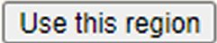

-- Pan and zoom to an area anywhere in the world.
-- Click the button .
A list of plants should appear to the right of the map collected near some random location in the visible region. Your challenge is to determine where in this region these plants were collected.
When you think you know, click on your estimated location on the map. The point you click will be marked and labeled with the distance in kilometers to the actual collection location. If "Show Distance Ring" is checked, a circle will also appear, and the collection location will be somewhere on or near the periphery of that circle (Circle error can be large with distances of several thousand kilometers, or at high latitudes.). Continue to click as you refine your guesses.
Click on to see the Habitat description for one of the selected specimens. (Not always available, and not always helpful.)
You can click at any time to see the actual collection location.
You can select one or more of the United States in the combo-box. (Hold the CTRL key to select more than one state.) In this case the random location will be somewhere within the boundaries of the selected state(s). Note, though, that the location is also limited to the visible region, so if the selected state is not visible, you will receive an error message. If only part of the selected state is visible, then the random collection location will be in that visible part.
To play again, just pan and zoom to a new location (or use the same region) and press "Use this region" again.
Notes:
-- Mouse-over the thumbnails to view larger pictures of the plants.
-- The images are of the listed species, but not necessarily of one of the target specimens. (The label on a specimen sheet may mention a location, but the specimen that provided the image may have been collected far from the target location. So "Plants of Arizona" doesn't necessarily mean the target is in Arizona!)
-- Once you have selected a region, you can pan and zoom without affecting the secret collection location. This can be useful as you zero in on the right place.
-- All the listed plants were collected within about 10 kilometers of each other. The Target Location is a median location of all the specimens, so it might fall in the middle of a lake or between close islands.
-- Occasionally the sytem times out trying to find a random location. Just press "Use this region" to try again. However, if the region is too small and too few collections have been made in that region, the program of course will continue to fail.
-- Note that errors and inaccuracies in the database are possible.
Maps courtesy of ESRI and OpenStreetMap.org
Program developed at Arizona State University and uses the SEINet database.